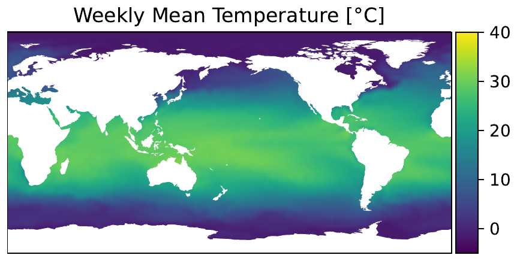
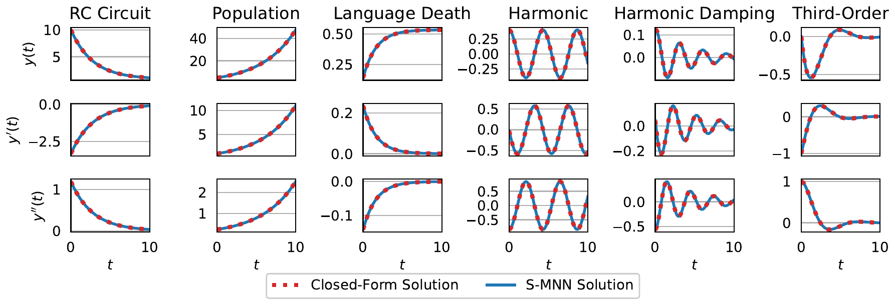
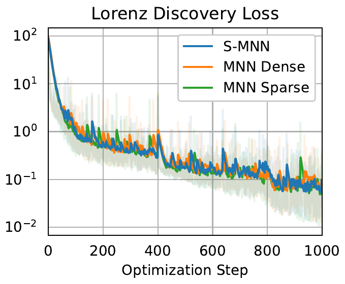
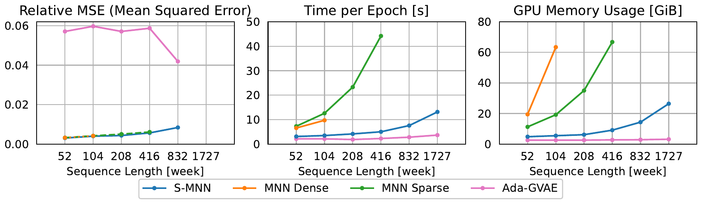
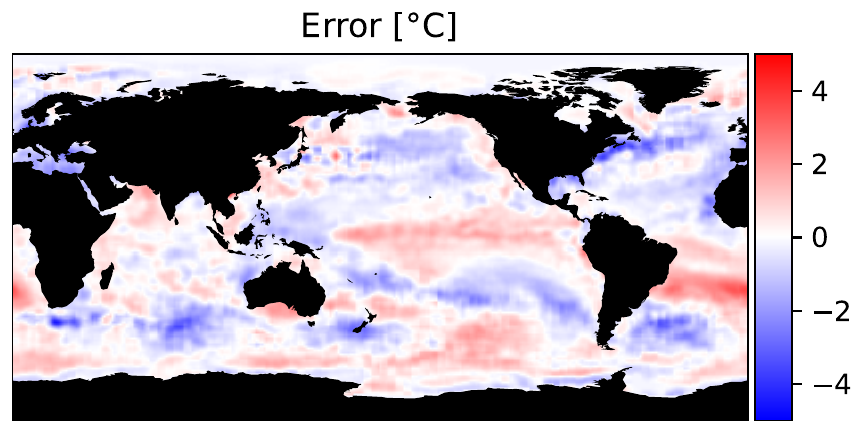

Scalable Mechanistic Neural Networks
Linear-time, linear-memory mechanistic modeling for long temporal sequences
We propose the Scalable Mechanistic Neural Network (S-MNN), an enhanced neural network framework designed for scientific machine learning applications involving long temporal sequences. By reformulating the original Mechanistic Neural Network (MNN), we reduce the computational time and space complexities from cubic and quadratic with respect to the sequence length, respectively, to linear. This improvement enables efficient modeling of long-term dynamics without sacrificing accuracy or interpretability. Extensive experiments demonstrate that S-MNN matches the original MNN in precision while substantially reducing computational resources, allowing it to drop-in replace the original MNN in applications.
Introduction
The Mechanistic Neural Network (MNN) (Pervez et al. 2024) couples a neural encoder with a differentiable ODE solver, so that instead of forecasting in a black box it learns an explicit ordinary differential equation from noisy observations — a representation that downstream science can read off for parameter identification or causal analysis (Yao et al. 2024). Unlike Neural ODEs (Chen et al. 2018), which parameterize the derivative of a hidden state, MNN exposes the governing equation itself.
1 We restrict our comparisons to the two solvers shipped with the original MNN — dense (exact) and sparse (conjugate-gradient) — since S-MNN is positioned as a drop-in replacement for both.
The catch is cost. The original solver comes in two flavors, and neither scales to long horizons.1 A dense solver inverts the full linear system — cubic time and quadratic memory in the sequence length T — and a sparse solver uses conjugate gradient, which trades memory for unstructured sparsity that underuses the GPU and can converge slowly or inaccurately on ill-conditioned, large-scale problems. This work introduces a scalable variant, S-MNN, that brings both time and space down to linear in T while keeping accuracy on par, making real climate-scale sequences tractable that the original MNN could not handle.

From quadratic program to banded least squares
A linear ODE over V variables, derivative orders up to R, and Q governing equations, sampled at T time points, is written as a set of clauses
\sum_{v=1}^{V} \sum_{r=0}^{R} c_{t,q,v,r}\, y_{t,v,r} = d_{t,q},
together with initial conditions and forward/backward smoothness constraints derived from Taylor expansions of y at adjacent time points. Stacking the unknown derivatives y_{t,v,r} into a vector \bm{y}, the coefficients into \bm{A}, and the right-hand sides into \bm{b} gives a system \bm{A}\bm{y} = \bm{b} that is over-determined for T>1 and is solved by weighted least squares,
\bm{y} = \left( \bm{A}^\top \bm{W} \bm{A} \right)^{-1} \bm{A}^\top \bm{W} \bm{b},
with \bm{W} a diagonal matrix of constraint weights.
S-MNN differs from the original MNN in three precise ways: it (1) removes the slack variables from the smoothness constraints, (2) extends the forward and backward smoothness constraints to the highest derivative order, replacing the central-difference constraints, and (3) replaces the quadratic program with the least-squares regression above.
The payoff is structural. Forming \bm{M} = \bm{A}^\top \bm{W} \bm{A}, the coefficients at time t depend only on those at t-1, t, and t+1, so ordering variables by t makes \bm{M} symmetric block-banded:
\bm{M} = \begin{bmatrix} \bm{M}_1 & \bm{N}_1^\top & & \\ \bm{N}_1 & \bm{M}_2 & \ddots & \\ & \ddots & \ddots & \bm{N}_{T-1}^\top \\ & & \bm{N}_{T-1} & \bm{M}_T \end{bmatrix},
with each block of size V(R+1). Only the non-zero blocks need to be computed or stored; the matrix \bm{A} is never explicitly constructed.
Because \bm{M} = \bm{A}^\top \bm{W} \bm{A} is positive-definite, S-MNN factorizes it with blocked LDL and Cholesky decompositions, \bm{P}\bm{L} \bm{L}^\top \bm{P}^\top = \bm{M}, then solves by forward/backward substitution. The backward pass has a closed form, \partial \ell / \partial \bm{\beta} = \bm{M}^{-1}\,\partial \ell / \partial \bm{y} and \partial \ell / \partial \bm{M} = -(\partial \ell / \partial \bm{\beta})\,\bm{y}^\top, avoiding generic autodiff.
Complexity
The original dense solver runs in O(T^3 V^3 R^3) time and O(T^2 V^2 R^2) space; the sparse solver is O(T^2 V^2 R^2) in both. S-MNN reduces time by a factor of \Theta(T^2) to O(T V^3 R^3) and space to O(T V^2 R^2) — both now linear in the number of time points T.
Experiments
The authors validate S-MNN on a standalone solver check and three scientific tasks: governing-equation discovery on the Lorenz system, solving the Korteweg–de Vries (KdV) PDE, and long-horizon sea surface temperature (SST) forecasting.
Standalone solver validation
On five linear ODEs drawn from ODEBench (d’Ascoli et al. 2024) plus an additional third-order ODE — each discretized into 1,000 steps of size 0.01 — the S-MNN solver’s numerical trajectories, together with their first and second derivatives, track the closed-form solutions with negligible difference.

Discovering the Lorenz system
Following the original MNN protocol, S-MNN recovers the seven coefficients of the chaotic Lorenz system from a 10,000-step trajectory (parameters \sigma=10, \rho=28, \beta=8/3), trained with sequence length 50 and batch size 512. The loss converges at essentially the same rate as the dense and sparse MNN solvers, confirming that removing the slack variables does not cost accuracy.

Measured on an NVIDIA H100 (80 GB), the efficiency gap is large. At the default setting (batch size 512, sequence length 50), S-MNN is 4.9× faster than the dense solver and uses 50% less GPU memory, and it keeps running at larger batch sizes and sequence lengths where both MNN solvers exhaust memory or become infeasible.
| Time / step [ms] | bs 512, T 50 | bs 512, T 5 | bs 512, T 500 | bs 64, T 50 | bs 4096, T 50 |
|---|---|---|---|---|---|
| MNN Dense | 36.4 | 9.5 | N/Aa | 10.0 | 208.1 |
| MNN Sparse | 104.4 | 76.5 | > 589.7b | 80.5 | 406.8 |
| S-MNN | 7.4 | 5.5 | 32.2 | 5.5 | 18.3 |
| GPU memory [GiB] | bs 512, T 50 | bs 512, T 5 | bs 512, T 500 | bs 64, T 50 | bs 4096, T 50 |
|---|---|---|---|---|---|
| MNN Dense | 2.77 | 1.18 | > 80.00a | 1.33 | 14.85 |
| MNN Sparse | 1.69 | 0.93 | 9.83b | 0.96 | 7.96 |
| S-MNN | 1.38 | 1.32 | 1.96 | 1.33 | 1.81 |
Solving the Korteweg–de Vries PDE
On the KdV benchmark from Brandstetter et al. (2022) — 512 samples each for train/validation/test, modeling each spatial point’s temporal evolution as an independent ODE with a ResNet-1D encoder — S-MNN and the MNN dense solver both sharply outperform the ResNet and FNO baselines on rollout-averaged normalized mean squared error (NMSE), with S-MNN edging out the dense solver. The MNN sparse solver fails to converge here.
| Method | NMSE |
|---|---|
| ResNet | 0.0223 |
| FNO | 0.0276 |
| MNN Sparse | No conv. |
| MNN Dense | 0.00006 |
| S-MNN | 0.00005 |
In wall-clock terms, training S-MNN took 10.1 hours versus 38.0 hours for the dense solver, using 2.19 GiB versus 3.40 GiB of GPU memory; the sparse solver took 82.4 hours (3.07 GiB) without reaching a satisfactory result.
Long-horizon sea surface temperature
The flagship demonstration is SST forecasting on the SST-V2 dataset — weekly mean temperatures over 1,727 weeks (late 1989 to early 2023) on a global 1° grid — paired with the Mechanistic Identifier (Yao et al. 2024) and a default chunk length of 208 weeks. S-MNN produces a faithful four-year prediction (Figure 1), and its error stays small even at sequence lengths the MNN solvers cannot reach.

The scaling tells the story: on a log x-axis, S-MNN’s runtime and memory rise linearly with sequence length, exactly as the complexity analysis predicts, while the MNN solvers climb steeply and blow past the 80 GiB limit. The dense solver cannot run beyond 104 weeks and the sparse solver beyond 416 weeks, while S-MNN handles the full 1,727-week record.

Conclusion
By eliminating slack variables and central-difference constraints, recasting the quadratic program as least squares, and exploiting the resulting banded matrix, S-MNN cuts mechanistic modeling from cubic/quadratic to linear in sequence length for both time and memory — with no loss in precision. It is a drop-in replacement for the original MNN (Pervez et al. 2024) that finally reaches the long, real-world temporal sequences mechanistic methods were built to interpret.
A known limitation remains: the sequential for-loops in the blocked Cholesky decomposition and the substitution steps still serialize along the time dimension, which can underutilize the GPU when batch and block sizes are small relative to T. Removing that bottleneck — full parallelism across time while keeping linear complexity — is left to future work.
Citation
@inproceedings{chen2024,
author = {Chen, Jiale and Yao, Dingling and Pervez, Adeel and
Alistarh, Dan and Locatello, Francesco},
title = {Scalable {Mechanistic} {Neural} {Networks}},
booktitle = {International Conference on Learning Representations
(ICLR)},
date = {2024-10-08}
}